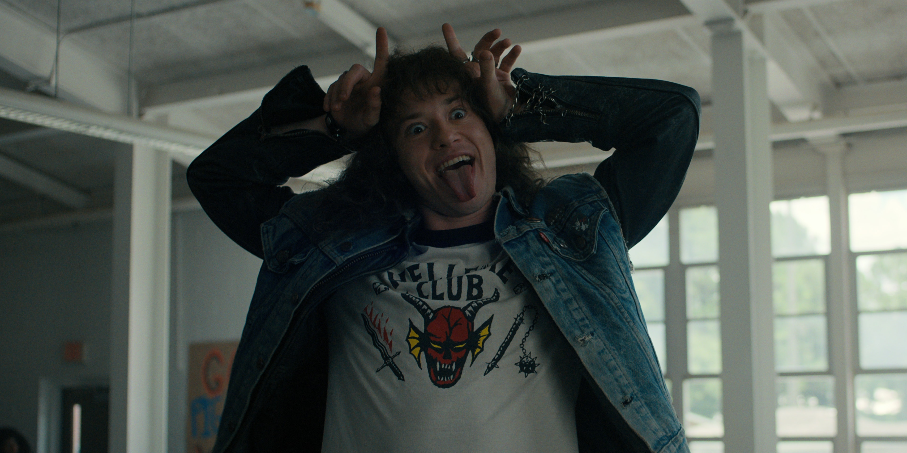

titulo
Por
Autor •
Nas últimas semanas voltaram a circular rumores de que Stranger Things poderia ganhar uma nova temporada. Oficialmente, nada foi confirmado. Mas quem acompanha essa indústria há tempo suficiente sabe que certas produções nunca realmente “acabam”. Elas apenas esperam o momento certo para retornar. E, olhando com atenção para alguns detalhes recentes — entrevistas estranhamente evasivas, símbolos recorrentes nas campanhas de marketing e o histórico da própria série — fica difícil acreditar que tudo isso seja coincidência.
Nas últimas semanas voltaram a circular rumores de que Stranger Things poderia ganhar uma nova temporada. Oficialmente, nada foi confirmado. Mas quem acompanha essa indústria há tempo suficiente sabe que certas produções nunca realmente “acabam”. Elas apenas esperam o momento certo para retornar. E, olhando com atenção para alguns detalhes recentes — entrevistas estranhamente evasivas, símbolos recorrentes nas campanhas de marketing e o histórico da própria série — fica difícil acreditar que tudo isso seja coincidência.

Agora, com a possibilidade de uma nova temporada, alguns observadores começaram a ligar pontos que talvez o público em geral prefira ignorar. Se a série realmente continuar, significará insistir mais uma vez na mesma narrativa: abrir o portal, trazer algo do outro lado, normalizar a ideia de que essa fronteira pode ser atravessada. Pode parecer absurdo para muitos, mas para quem presta atenção aos padrões culturais e simbólicos que se repetem ao longo da história, isso começa a parecer menos como entretenimento inocente e mais como parte de algo muito mais antigo.
Talvez, no fim das contas, tudo não passe de coincidência — apenas mais uma produção tentando estender seu sucesso comercial. Mas também vale lembrar que, ao longo dos séculos, histórias sobre a chegada de grandes catástrofes quase sempre começam da mesma forma: com sinais aparentemente pequenos, ignorados porque parecem ridículos demais para serem levados a sério. Se uma nova temporada de Stranger Things realmente acontecer, talvez seja hora de observar com um pouco mais de atenção o que exatamente estão tentando nos mostrar.